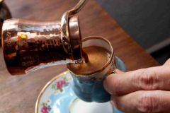

How to Make Turkish Coffee

Ingredients
- 150 ml cold water
- 2 tablespoons Turkish coffee
- 1 to 3 teaspoons sugar, optional
- 1 Cezve (Turkish Coffee Pot)
Instruction
- Pour 150 ml cold water into the cezve.
- Add 2 tablespoons turkish coffee
- Add 1 to 3 teaspoons sugar
- Place the cezve on the stovetop over medium heat.
- After a few minutes, the coffee will rise and foam up.
- Just before it begins to boil, remove the cezve from the heat.
- Skim off the foam, adding a little to each serving cup.
- Return the cezve to the heat and let it slowly foam up again.
- Pour the coffee very slowly into the serving cups so the foam rises to the top.
- Let the coffee settle for a few minutes, then serve.